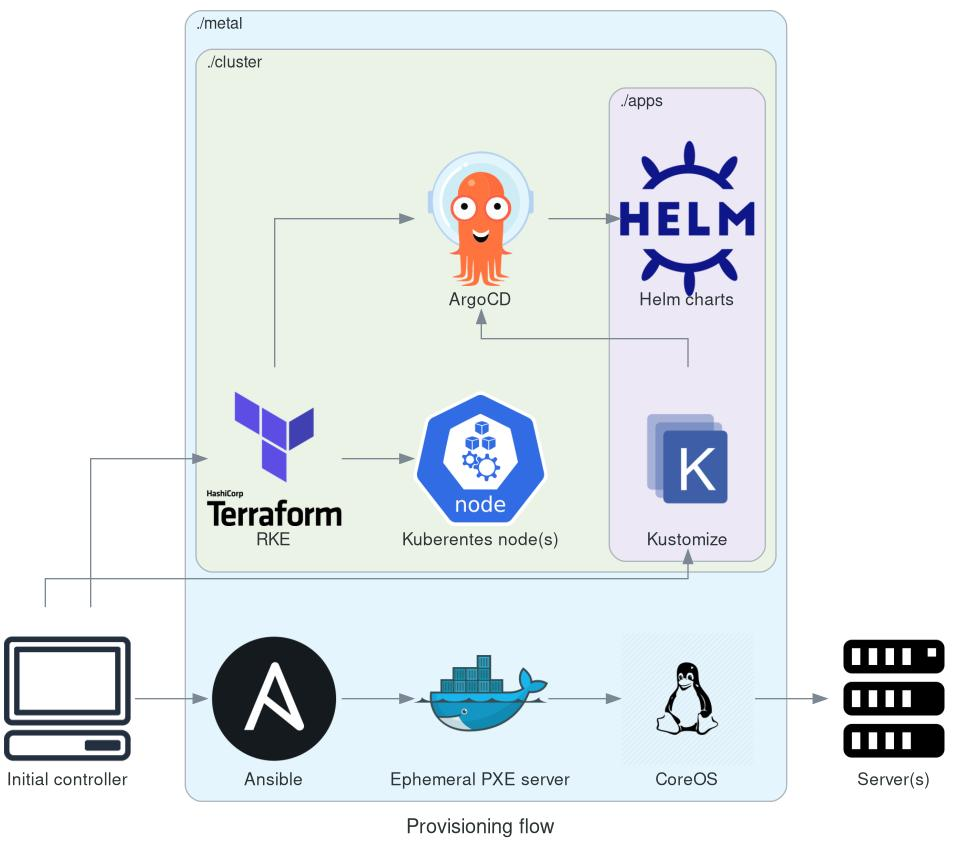

Summary
Deployment
TODO
Provisioning flow

TODO
Hardware requirements
Initial controller
The initial controller is the machine used to bootstrap the cluster.
- Any machine that can run Linux and Docker should work (I'm using my laptop).
- Wired Ethernet connection is prefered (Wifi is untested, please let me know if it works)
Server hardware
This is the requirements for each node
-
Minimum:
- 1 node
- At least 2 cores
- At least 8GB of RAM
- At least 128GB of hard drive
-
Recommended:
- 3 nodes or more for high availability
- 4 cores
- 16GB of RAM
- 512GB of hard drive (depending on your storage usage, the base installation will not use more than 128GB)
-
Ability to boot from the network (PXE boot)
-
Wake-on-LAN capability, used to wake the machines up automatically without physically touching the power button
-
Connected to the same wired network with the initial controller (for DHCP broadcast)
Prerequisites
TODO
Configuration
TODO
Deploy the homelab
TODO
Troubleshooting
TODO
PXE boot
PXE server logs
To view PXE server (includes DHCP, TFTP and HTTP server) logs:
docker-compose --project-directory ./metal/roles/pxe-server/build/ logs --follow
Nodes not booting from the network
- Plug a monitor and a keyboard to one of the bare metal node if possible to make the debugging process easier
- Check if the controller (PXE server) is on the same subnet with bare metal nodes (sometimes Wifi will not work or conflict with wired Ethernet, try to turn it off)
- Check if bare metal nodes are configured to boot from the network
- Check if Wake-on-LAN is enabled
- Check if the operating system ISO file is mounted
- Check the controller firewall config
- Check PXE server Docker logs
Reference
TODO
Architecture
TODO
FAQ
Do I need to install Linux on my servers before provisioning the homelab?
No, and it's the beauty of this set up. You start from scratch (empty hard drive), type a single command on your laptop/PC and it will install the OS for you automatically, in parallel via the network.
Do I need to keep the PXE server running?
No, the ephemeral PXE server is stateless, after Linux is installed on your servers you can shut it down (or not, ideally you don't even need to care about its existence).
The Ansible set up in ./metal is idempotent and will start the PXE server if needed.
Why use Fedora CoreOS instead of a traditional Linux distro?
There are several benefits:
- Automatic update
- Atomic upgrade
- Immutable
- Minimal
- Faster install time (3 minutes compare to 5 minutes on Fedora or CentOS)
- Faster provisioning (Docker already installed, save 5 minutes)
However this is a fairly new distro, so it may not be really stable yet.
Where Terraform state is stored?
In a Docker container on the first node, which was created by the ./metal layer (it's not HA yet).
However I'm experimenting with Cluster API, remove the needs for a Terraform state storage.
Changelog
0.0.3-alpha
- Generate Terraform backend config automatically
- Switch to CoreOS
- Better PXE boot setup
- Diagrams as code
0.0.2-alpha
- Ensure idempotency for bare metal provisioning
- Extract instead of mounting the OS ISO file
- Easy initial controller setup (with only Docker)
- Switch to Fedora
- Remove LXD
- Move etcd (Terraform state backend) back to Docker
0.0.1-alpha
- Bare metal provisioning with PXE
- LXD cluster
- Terraform state backend (etcd)
- RKE cluster
- Core services (Vault, Gitea, ArgoCD,...)
- Public services to the internet (via port forwarding or Cloudflare Tunnel)
Roadmap
Current status: Alpha
Beta requirements
Good enough for playaround with and personal use
-
Automated bare metal provisioning
- Controller set up (Docker)
- OS installation (PXE boot)
- Automated cluster creation (Terraform)
- Automated application deployment (ArgoCD)
- Everything is defined as code
-
Basic services
- Gitea
- DoneCI
- NextCloud
- PeerTube,
- Mail server
- Mattermost
- Matrix with bridges
- Vault
- VPN
- Dashboard
- Cloudflare tunnel (optional)
- Local DNS
- Mirror all git repositories from GitHub automatically
- Monitoring and alerting
- Local container registry
- SSO
- Backup solution (3 copies, 2 seperate devices, 1 offsite)
- 70% availability (might break in the weekend due to new experimentation)
Stable requirements
Can be used in "production" (for family or even small scale bussinesses)
- A single command to deploy everything
- Fast deployment time (from empty hard drive to running services under 1 hour)
-
Fully automatic, not just automated
- Bare-metal OS patching
- Backups
- Secrets management and rotation
- Self healing
- Autoscale to save electricity (optional)
- 99,9% availability (less than 9 hours of downtime per year)
- Backup encrytion
- Split DNS
- Secure by default
- Static code analysis
- Minimal dependency on external services
- Only use open-source technologies
-
Complete documentation and architecture diagram (automated update if possible)
- Book (this book)
- Walkthrough building tutorial and feature demo (video)
Unplanned
Nice to have
- Addition services (TBD)
- Air-gap install
- Automated testing
- Security audit
- Migrate to RKE2 (new Terraform provider for RKE2 is not release yet)
- Serverless (OpenFaaS/Kubeless/Fission/Supabase...)
- Cluster API (https://github.com/khuedoan/homelab/pull/2)